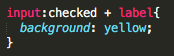

March 30, 2017
15 Useful CSS Tricks
CSS
If you are a Front End or a Web Developer, you would often be dealing with CSS. You may have had those moments when you were trying to find out how to code something and realized that you can do that with CSS. CSS is becoming more and more powerful and nowadays, it allows a lot for possibilities. This post provides you with useful CSS tricks that you might have overlooked. Some of the tricks that are presented in this post are widely supported but not by all; others are on their way of being fully supported by all browsers.
1. OVERRIDING ALL STYLES
If you want to override another CSS style for a specific element, you can use !important after the style in your CSS. You should remember that this should be used moderately because if you use !important for everything, there may come troubles in the long run. For example, let’s say you have CSS style that sets all H2 headers green. If you were to set H2 headers in the specific section of the site as red, you would use the following CSS:
2. LINK STATES
Link states styles are missed by many Front-End and Web Developers. Misuse of link states can create usability issues for the visitors. The :link pseudo-class controls the styling of all of the links that haven’t been clicked on yet. The :visited pseudo-class controls the styling of all of the links that have been clicked and visited. This tells the website visitors where they have already been to on the website, and where they have yet to explore.
3. :BEFORE
:BEFORE is a CSS selector that allows you to choose a CSS element and insert content before every element with a specific class applied to it. For example, if you want a specific text before every H1 header, you would then use the following CSS:
You can also insert image before specific elements by putting URL of the image in the content. This becomes especially handy if you are using an icon font. You can place icons before certain elements and apply it globally.
4. :AFTER
Like :BEFORE selector, you can use :AFTER to insert content globally on specific elements. For example, if you want to put green color “Read more” text after each paragraph, you would use the following CSS:
5. DROP CAPS
A drop cap is a large capital letter at the beginning of a text block that has the depth of two or more lines of a regular text. This can be found in many old traditional books and it is a great way to start a page of content as the first large letter is what really grabs readers’ attention. In CSS, drop caps can be created by using pseudo element, :first-letter. Here is an example:

Above CSS sets the first letter to 3x the size of the other letters and sets the color of the letter to red. It sets margin to be 3px so that there would be 3px of space around the letter to avoid any overlapping.
6. CSS SHAPES
CSS Shapes gives you the ability to wrap text around non-rectangular objects, such as flowing text around a curve. You can use shape-outside property to curve text around a floated image. This property can be used on floated elements. Below is an example:
7. COLOR FADE ON HOVER
You can set the color of a specific link to fade on hover using :hover pseudo-class. Below is an example:
In the example, the color of the link has been set to blue and transition properties have been used for color to slowly fade in. Under :hover pseudo-class, color of the link has been set as green, so when the user hover over the link, the color of the link will slowly make a transition into green.
8. STYLE BROKEN IMAGES
Broken images on the website never look good and give feelings that website is not properly managed to visitors. Broken images happen every now and then, having one or two images on website in broken condition. Using some advanced CSS techniques, we can style broken images and provide custom error messages to the visitors. Following is an example:
In the example, :after pseudo-class has been used to show customer an error message if the image is broken. In the content property, you can input custom error message with alt (optional image name). Custom error message looks much better and more professional than the browsers’ default.
9. COMMA-SEPARATED LISTS
We can display an unordered list as a comma-separated list by using :afterpseudo-class with content property of “,”. Note the use of :not(:last-child) to ensure that the comma won’t be inserted after the last list element.
10. NUMBERING HEADINGS & SUBHEADINGS
Let’s say you have a set of headings and subheadings that need to be manually numbered. For this, you can use a trick called CSS counter to number the headings and subheadings automatically. It is supported by all browsers, with the exception of Internet Explorer 6. Following is an example:
The Counter-reset property creates or resets one or more counters. The Counter-reset property is used together with the counter-increment property and the content property.
11. CSS STICKY ELEMENT
Sticky elements are elements on a page that will not be scrolled out of view. In other words, it sticks to a visible area. You can create this with CSS using position: sticky. For now, only Firefox supports this trick.
12. MANDATORY FIELDS (FORM)
If you are attempting to create a form with required or optional specific fields to be filled out by the users, you can use :required :optional pseudo-class. Below is an example:
In the example, the border of the required field is set to be in solid pink color whereas the optional field is in solid blue color.
13. CSS CHECKED
In a situation where a checkbox has been checked, it would be nice to have another indication apart from the tiny checkmark inside the checkbox to show that the item has been checked.
There is CSS for that which exploits the bond between the immediate siblings, two elements side by side. CSS has adjacent sibling selector denoted by the “+” sign, and you can use it to target the label beside the checkbox. You can use :checked pseudo-class to select the checked checkbox. Following is an example:

In the example, it is selecting the checked checkbox along with its label, and highlighting the background with yellow color.
14. DISCLOSE FILE FORMAT
Let’s say you have a link of PDF file in your website and you want to show the file format as its form, PDF. There is a CSS trick which allows you to do this by inputting a small image of PDF behind the link. You can use content:url() to display the image behind the link.
In the example, it is selecting all the link that has “.pdf” at the end and it is using ::after pseudo-class to insert the image behind the link.